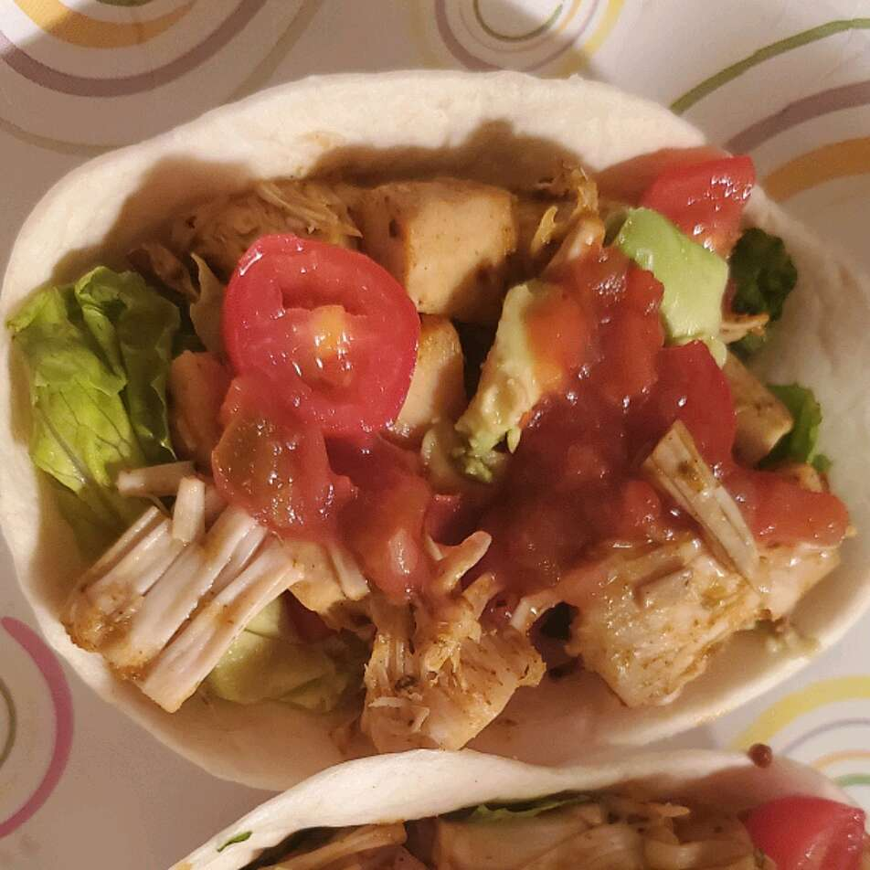

Vegan Jackfruit Tacos

Jackfruit is a great vegan alternative to shredded chicken to use in tacos. These jackfruit tacos are delicious and vegan! Choose your favorite taco toppings, such as lettuce, tomato, cilantro, avocado, vegan cheese, and vegan sour cream.
Ingredients
- 2 (20 ounce) cans jackfruit in brine - drained, rinsed, and cut into bite-sized pieces
- 1 tablespoon vegetable oil
- 1 tablespoon water, or more as needed
- 2 tablespoons taco seasoning mix, or to taste
- 4 taco shells
- ½ cup salsa, or to taste